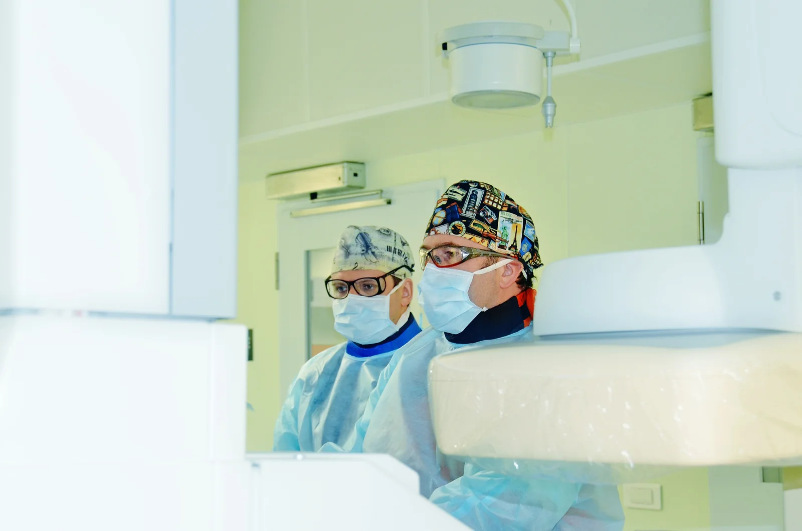
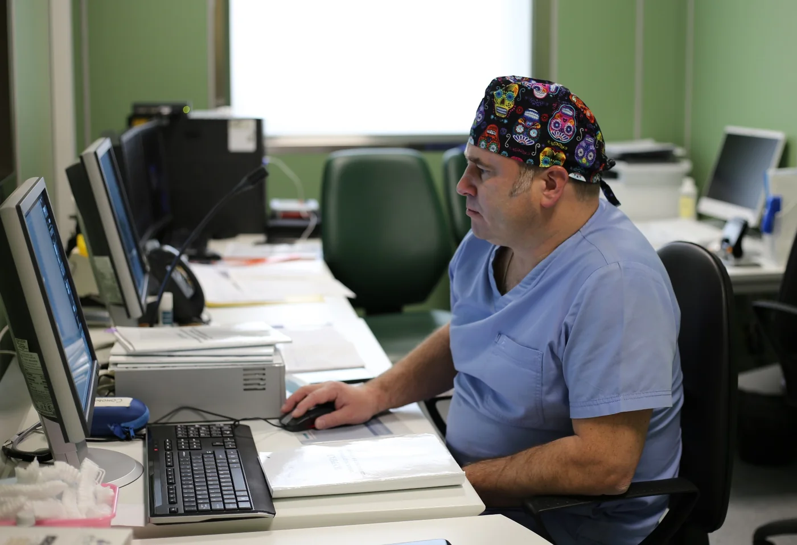
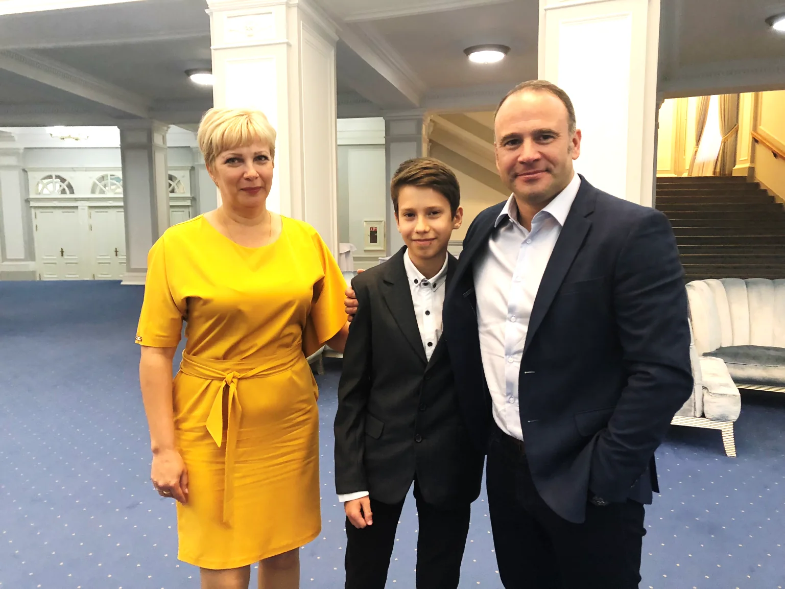

Аневризмы сосудов головного мозга
Диагностика и хирургическое лечение церебральных аневризм, в том числе сложной анатомии и после ранее выполненных вмешательств.
Научная публикацияДоктор медицинских наук · Профессор
Эндоваскулярный нейрохирург. Сложные сосудистые заболевания головного и спинного мозга у взрослых и детей.
РУКОВОДИТЕЛЬ НИЦ ЭНДОВАСКУЛЯРНОЙ НЕЙРОХИРУРГИИ ФЦМН ФМБА РОССИИ
ДИРЕКТОР АССОЦИАЦИИ ЭНДОВАСКУЛЯРНЫХ НЕЙРОХИРУРГОВ ИМ. Ф.А. СЕРБИНЕНКО
ВЗРОСЛЫЕ И ДЕТИ
Направления лечения
Кирилл Юрьевич консультирует взрослых и детей с сосудистыми заболеваниями головного и спинного мозга. Тактика определяется после изучения снимков и медицинских документов.
Диагностика и хирургическое лечение церебральных аневризм, в том числе сложной анатомии и после ранее выполненных вмешательств.
Научная публикацияЭмболизация и микрохирургическое лечение АВМ головного и спинного мозга; при необходимости — поэтапная тактика.
Научная публикацияЭндоваскулярное лечение дуральных и спинальных фистул, каротидно-кавернозных соустий и других патологических сосудистых сообщений.
Научная публикацияОбследование и эндоваскулярное лечение стенозов экстракраниальных и интракраниальных артерий.
Научная публикацияЭндоваскулярное восстановление кровотока при остром ишемическом инсульте при наличии показаний.
Научная публикацияДиагностика и хирургическое лечение мальформации вены Галена, аневризм и других сосудистых заболеваний у детей.
Научная публикация
Для пациента
До консультации врач может изучить МРТ, КТ, ангиографию и выписки. Для оценки тактики нужны сами исследования, а не только заключения.
Укажите диагноз, основные жалобы и даты последних исследований. Приложите снимки в формате DICOM, заключения и выписки.
Кирилл Юрьевич оценит анатомию сосудов, результаты проведённого лечения и предложенную ранее тактику.
На консультации обсуждаются диагноз, возможные методы лечения, показания и риски.
Если вмешательство показано, определяется метод лечения, его этапность и клиническая база.
О враче
Кирилл Юрьевич Орлов — представитель санкт-петербургской школы нейрохирургии. Основные направления работы — эндоваскулярное и микрохирургическое лечение сосудистых заболеваний головного мозга.Кирилл Юрьевич Орлов — нейрохирург петербургской школы. Специализируется на сосудистых заболеваниях головного мозга, применяя эндоваскулярные и микрохирургические методы.
Владеет эндоваскулярными и открытыми микрохирургическими методиками. Способ лечения определяется индивидуально с учётом анатомии сосудов, клинической картины и результатов обследования.
«Нужно делать всё для спасения пациентов, особенно детей, и бороться за каждого».Официальный профиль ФЦМН
Опыт

Профессиональная работа
ФЦМН ФМБА РоссииРуководитель научно-исследовательского центра эндоваскулярной нейрохирургии.
RENSДиректор Ассоциации эндоваскулярных нейрохирургов имени академика Ф.А. Сербиненко.
РУДНПрофессор; участвует в подготовке врачей по современным нейрохирургическим технологиям.
Международное сообществоПочётный амбассадор ESMINT; участие в работе SNIS, WFNS, EANS, AANS и SeENS.

Особое направление
Кирилл Юрьевич занимается лечением мальформации вены Галена, инсультов, аневризм и других сосудистых заболеваний у детей и новорождённых. Решения принимаются совместно со специалистами детского профиля.
Обсудить случай ребёнкаПризнание
Профессиональные награды Кирилла Юрьевича Орлова в области нейрохирургии, медицинской науки и организации специализированной помощи.
За вклад в развитие эндоваскулярной нейрохирургии.
Награда Юго-Восточного Европейского нейрохирургического общества.
За вклад в развитие медицинской науки и института.
За развитие специализированной помощи пациентам атомных городов.
Частые вопросы
Общая информация для подготовки к консультации. Окончательные рекомендации даются после изучения медицинских документов.
Да. Для предметного разбора желательно предоставить свежие МРТ, КТ или ангиографию в формате DICOM, заключения специалистов и выписки о ранее проведённом лечении.
Да. Одно из специальных направлений — сложные сосудистые заболевания у детей и новорождённых, включая мальформацию вены Галена и детские аневризмы.
Нет. Решение зависит от вида патологии, анатомии сосудов, симптомов и соотношения рисков. Цель консультации — выбрать обоснованную тактику, в том числе наблюдение, если вмешательство не показано.
Обычно нужны сами изображения МРТ, КТ, КТ-ангиографии или церебральной ангиографии, а не только текстовое заключение. Также полезны выписки, список лекарств и сведения о предыдущих операциях.
Предварительный разбор документов возможен дистанционно. Формат дальнейшей консультации определяется индивидуально: в сложных случаях может потребоваться очный осмотр.
Связаться
В первом письме укажите диагноз, основные жалобы и электронную почту для ответа. Медицинские документы можно приложить к письму.